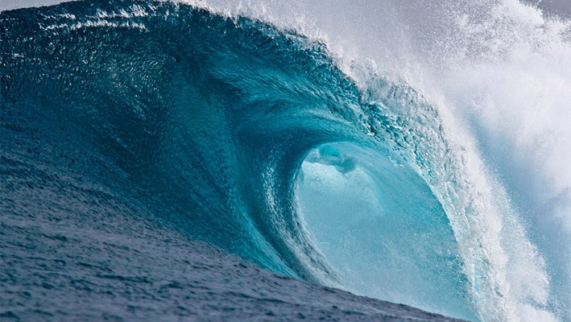
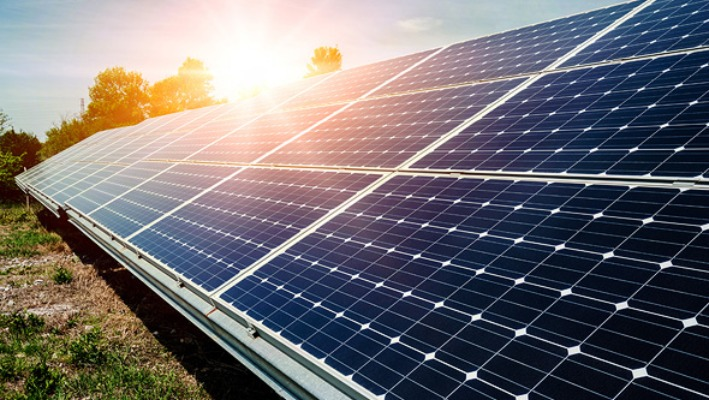
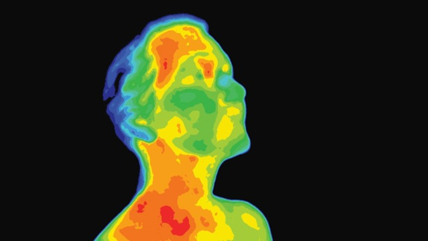
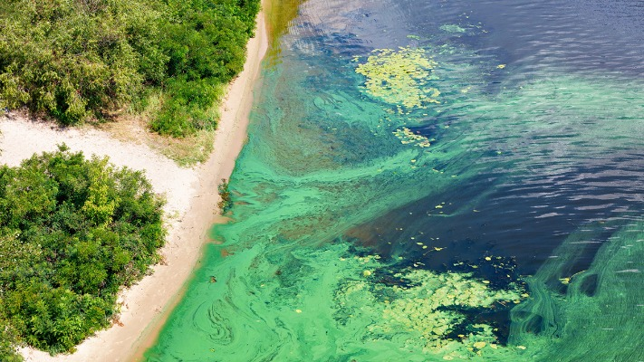

Wave EnergyWave energy is the transport and capture of energy by ocean surface waves. The energy captured is then used for all different kinds of useful work, including electricity generation, water desalination, and pumping of water. Wave energy is also a type of renewable energy and is the largest estimated global resource form of ocean energy.How it WorksAbsorbers are one form of technology that produces wave energy. They extract energy from the rise and fall of the waves with a buoy. Once the energy is extracted it is then converted to electrical energy with a linear or rotary generator.
|

Printable Solar PanelsHow it Works (Click Below)The majority of solar panels today are made from silicon. The Australian scientists at Greenmatch though, are using organic semiconductor polymers, which are then broken down to create ink. The resulting ink has the ability to capture light and convert it into electricity. The ink can be printed over plastic surfaces, or even steel, which means that that those printed solar panels could be even embedded into buildings. |
|---|---|

Body Heat ElectricityHow it WorksThe basic technology behind the concept of turning body heat into electricity is a thermoelectric device. It is usually a thin conductive material that exploits the temperature difference between its two sides to generate electricity, known as the Seebeck effect. Such devices can work in reverse, meaning if you were to apply electricity to the device, one side would get extremely cold and the other extremely hot. The same idea is also used in cooling some computers. |

Algae BiodieselAlgae grow naturally all over the world. Under optimal conditions, it can be grown in massive, almost limitless, amounts. Did you know that half of algae's composition, by weight, is lipid oil? Scientists have been studying this oil for decades to convert it into algae biodiesel -- a fuel that burns cleaner and more efficiently than petroleum.How it Works (Click Below)How can we get oil from algae? It's like getting juice from an orange -- with an additional chemical reaction thrown in. Algae are grown in either open-pond or closed-pond systems. Once the algae are harvested, the lipids, or oils, are extracted from the walls of the algae cells.There are a few different ways to extract the oil from algae. The oil press is the simplest and most popular method. |